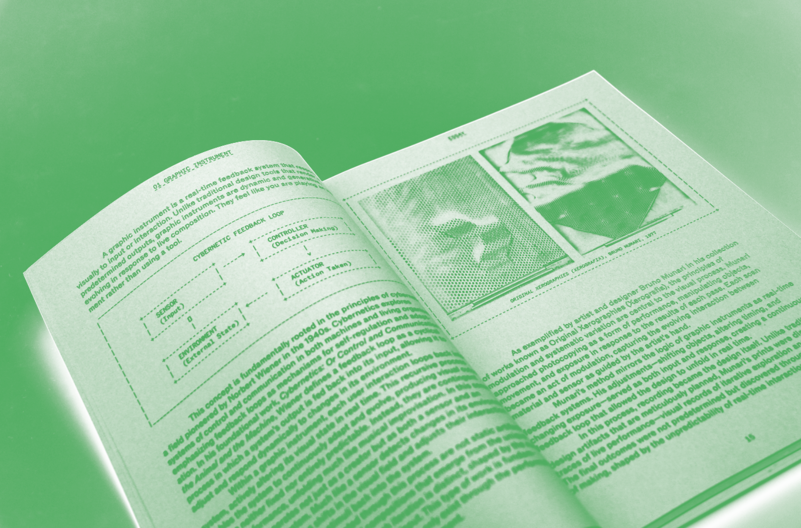
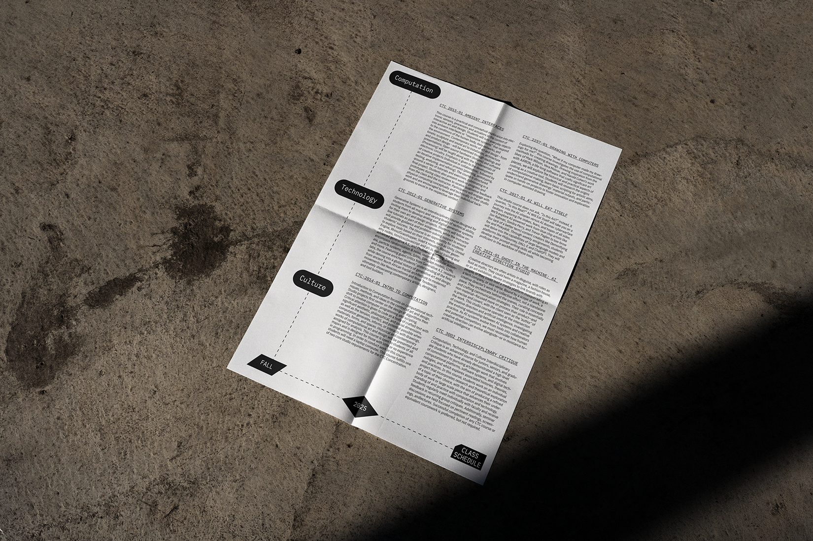
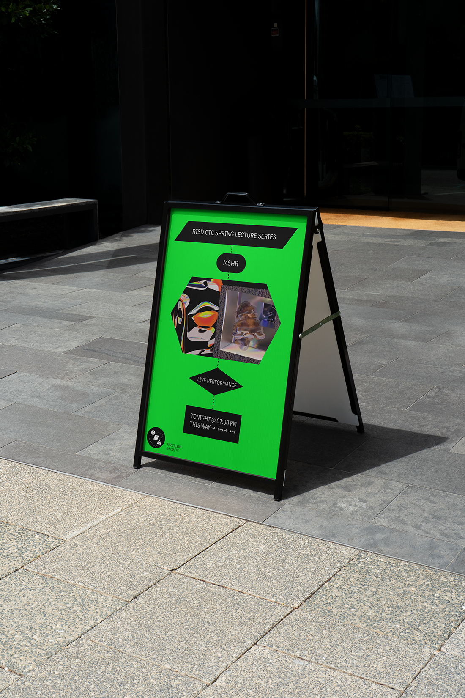
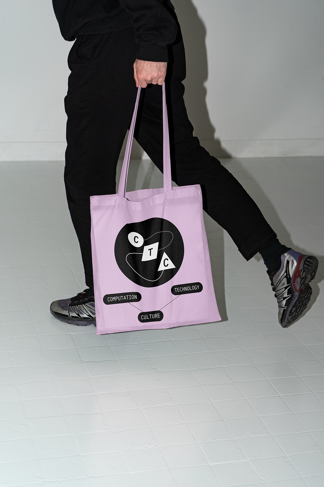
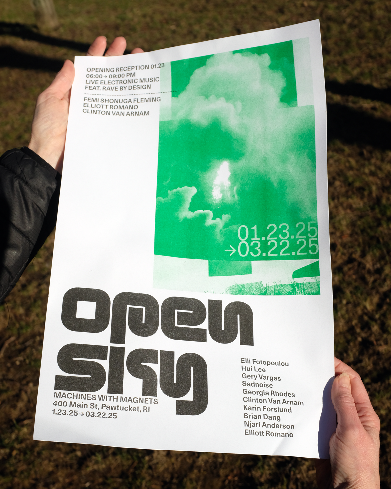
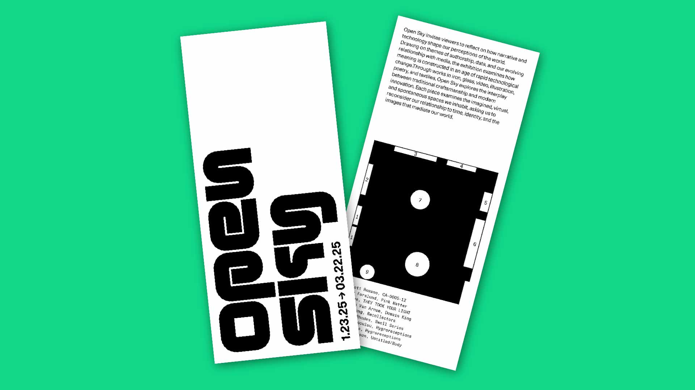
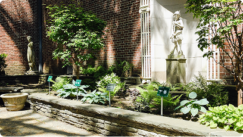
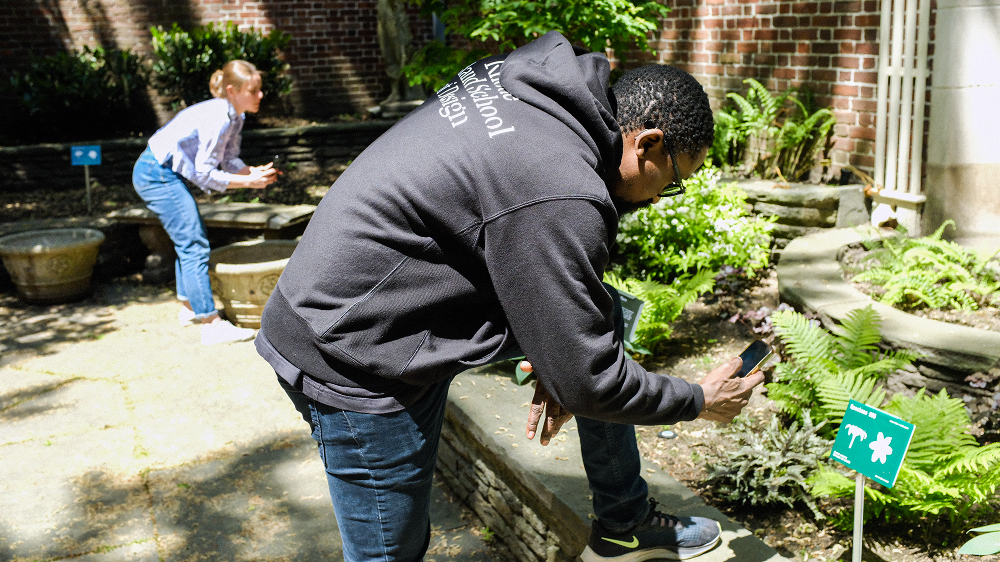

Instrument MFA Thesis
Printed Manual and lecture/performance covering a 3-year inquiry into the creation of graphic instruments, and interactive tools for audio reactive typography and design.

Elliott Romano is a graphic designer specializing in software, tools, and interactive spaces. He creates visual systems and interfaces help people understand, shape, and play with technology.
Instrument MFA Thesis
Printed Manual and lecture/performance covering a 3-year inquiry into the creation of graphic instruments, and interactive tools for audio reactive typography and design.

RISD CTC Visual Identity
Visual identity created for RISDs newest academic program since 1996. Inspired by historical logic diagrams, the system aims to continually express the relationships between computers, technology, & culture.



OPEN SKY VISUAL IDENTITY
Printed and digital materials created for OPEN SKY, an independent exhibition of mediums exploring data & authorship. Designed in collaboration with Clinton Van Arnam.


RISD Museum digital guide & wayfinding
Visual identity and exhibition concept for Various Flora, a show exploring floral forms through the lens of machine learning.
RISD Museum digital guide & wayfinding
Visual identity and exhibition concept for Various Flora, an installation exploring floral forms through the lens of machine learning.


